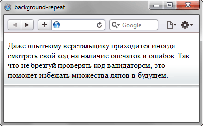

background-repeat
Определяет, как будет повторяться фоновое изображение, установленное с помощью свойства background-image. Можно установить повторение рисунка только по горизонтали, по вертикали или в обе стороны. Допустимо указывать несколько значений для каждого фона, перечисляя значения через запятую.
Краткая информация
| Значение по умолчанию | repeat |
|---|---|
| Наследуется | Нет |
| Применяется | Ко всем элементам |
Синтаксис
background-repeat: <повторение> [ , <повторение> ]* Здесь:
<повторение> = repeat-x | repeat-y | [repeat | space | round | no-repeat]{1,2}
Допустимо указывать два значения, первое ключевое слово задаёт повторение по горизонтали, второе по вертикали.
Значения
- no-repeat
- Устанавливает одно фоновое изображение в элементе без его повторений, положение которого определяется свойством background-position (по умолчанию в левом верхнем углу). Аналогично no-repeat no-repeat.
- repeat
- Фоновое изображение повторяется по горизонтали и вертикали. Аналогично repeat repeat.
- repeat-x
- Фоновый рисунок повторяется только по горизонтали. Аналогично repeat no-repeat.
- repeat-y
- Фоновый рисунок повторяется только по вертикали. Аналогично no-repeat repeat.
- space
- Изображение повторяется столько раз, чтобы полностью заполнить область; если это не удаётся, между картинками добавляется пустое пространство.
- round
- Изображение повторяется так, чтобы в области поместилось целое число рисунков; если это не удаётся сделать, то фоновые рисунки масштабируются.
Пример
<!DOCTYPE html>
<html>
<head>
<meta charset="utf-8">
<title>background-repeat</title>
<style>
body {
background-image: url(images/bg_grey.png); /* Путь к фоновому рисунку */
background-position: left bottom; /* Положение фона */
background-repeat: repeat-x; /* Повторяем фон по горизонтали */
}
</style>
</head>
<body>
<p>Даже опытному верстальщику приходится иногда смотреть свой код
на наличие опечаток и ошибок. Так что не брезгуй проверять код валидатором,
это поможет избежать множества ляпов в будущем.</p>
</body>
</html>Результат данного примера показан на рис. 1.

Рис. 1. Повторение фона по горизонтали
Сама фоновая картинка приведена на рис. 2.
Рис. 2. Фон для блока
<!DOCTYPE html>
<html>
<head>
<meta charset="utf-8">
<title>background-repeat</title>
<style>
body {
background-image: url(images/pattern-left.png), url(images/pattern-right.png);
background-position: left, right;
background-repeat: repeat-y, repeat-y;
}
</style>
</head>
<body>
<div style="height:2000px">
</div>
</body>
</html>Объектная модель
Объект.style.backgroundRepeat
Спецификация
| Спецификация | Статус |
|---|---|
| CSS Backgrounds and Borders Module Level 3 | Возможная рекомендация |
| CSS Level 2 (Revision 1) | Рекомендация |
| CSS Level 1 | Рекомендация |
Браузеры
| Internet Explorer | Chrome | Opera | Safari | Firefox | |
| один фон | 4 | 1 | 3.5 | 1 | 1 |
| несколько фонов | 9 | 1 | 10.5 | 1.3 | 3.6 |
| Android | Firefox Mobile | Opera Mobile | Safari Mobile | |
| один фон | 2.1 | 1 | 10 | 3.2 |
| несколько фонов | 2.1 | 1 | 10 | 3.2 |